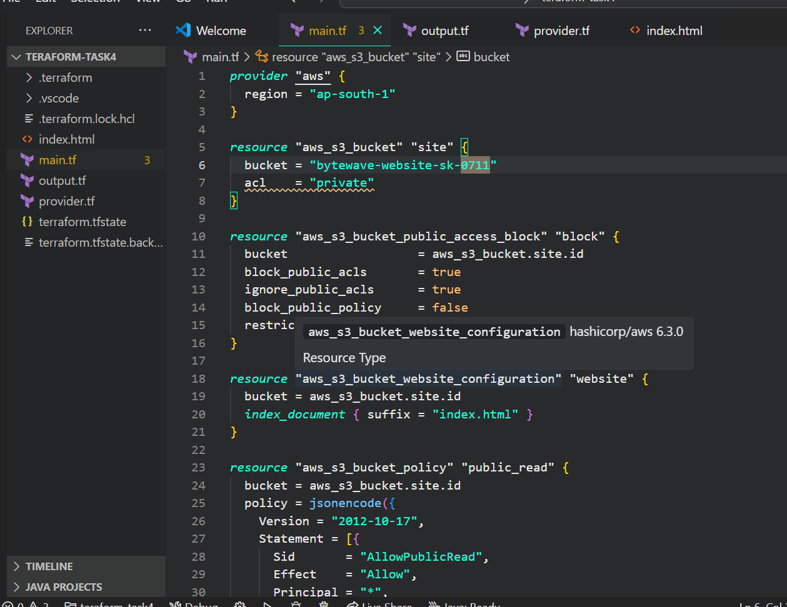
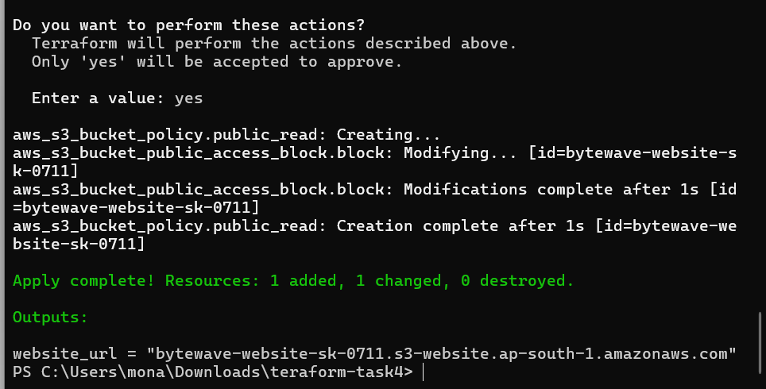

Hosting "ByteWave Solutions" website using Terraform
Activity 1: Launch a Static Website on S3
Objective: Host a basic HTML webpage on an AWS S3 bucket using Terraform.
Scenario:
ByteWave Solutions, a startup, wants to showcase their services through a static website hosted on AWS. They want a simple setup with no server maintenance.
Requirements:
S3 bucket named bytewave-website-[your_initials]
Static website hosting enabled with index.html
Block all public access settings
Bucket policy for public read access
Upload sample index.html
Output website endpoint URL
Implementation Steps with Screenshots
1
Write Terraform Code
Create the main.tf file and define the S3 bucket, website config, and policy using Terraform.

2
Terraform Apply
Initialize and apply the Terraform configuration using the command line. Confirm by typing yes.

3
Access Deployed Website
Open the output URL shown after terraform apply. Your static site is now live on S3!